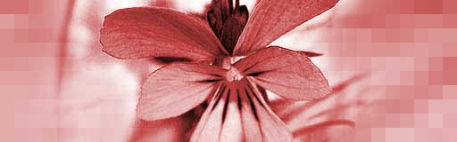

About
Details about the OMaps Live Stream
Congratulations
You successfully managed to install this streaming web server. If you can see this page, you can also access the stream of JPGs, which can originate from your webcam, for example. This installation consists of these example pages, and you may customize the look and content.
The reason for developing this software was the need for a simple and resource-friendly streaming application for Linux-UVC compatible webcams. The predecessor uvc-streamer works well, but I wanted to implement a few more ideas. For instance, plugins can be used to process the images. One input plugin copies images to a global variable, multiple output plugins can access those images. For example, this webpage is served by the output_http.so plugin.
The image displayed here was grabbed by the input plugin. The HTTP request contains the GET parameters action=snapshot. This requests one single picture from the image input. To display another example, just click on the picture.
About the examples
To view the stream with any browser, you may try the javascript or java subpages. Firefox is able to display the M-JPEG stream directly.
About this server
This server is running software written for the OMaps project. The OMaps developers cannot be held responsible for installations of this software.
© OMaps